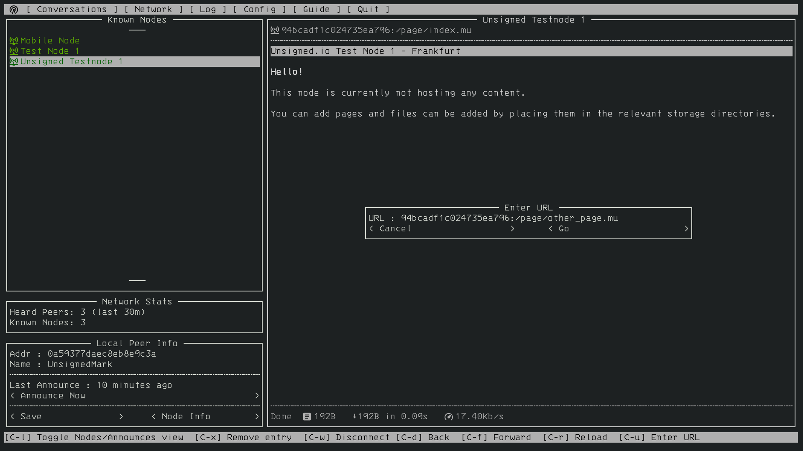

Getting Started Fast¶
The best way to get started with the Reticulum Network Stack depends on what you want to do. This guide will outline sensible starting paths for different scenarios.
Try Using a Reticulum-based Program¶
If you simply want to try using a program built with Reticulum, you can take a look at Nomad Network, which provides a complete encrypted communications suite built with Reticulum.
{kind=link}
Nomad Network is a user-facing client in the development for the messaging and information-sharing protocol LXMF, another project built with Reticulum.
You can install Nomad Network via pip:
# Install ...
pip3 install nomadnet
# ... and run
nomadnet
Using the Included Utilities¶
Reticulum comes with a range of included utilities that make it easier to manage your network, check connectivity and make Reticulum available to other programs on your system.
You can use rnsd to run Reticulum as a background or foreground service,
and the rnstatus, rnpath and rnprobe utilities to view and query
network status and connectivity.
To learn more about these utility programs, have a look at the Using Reticulum on Your System chapter of this manual.
Creating a Network With Reticulum¶
To create a network, you will need to specify one or more interfaces for
Reticulum to use. This is done in the Reticulum configuration file, which by
default is located at ~/.reticulum/config.
When Reticulum is started for the first time, it will create a default configuration file, with one active interface. This default interface uses your existing ethernet network (if there is one), and only allows you to communicate with other Reticulum peers within your local broadcast domain.
To communicate further, you will have to add one or more interfaces. The default configuration includes a number of examples, ranging from using TCP over the internet, to LoRa and Packet Radio interfaces.
Possibly, the examples in the config file are enough to get you started. If you want more information, you can read the Building Networks and Interfaces chapters of this manual.
Develop a Program with Reticulum¶
If you want to develop programs that use Reticulum, the easiest way to get started is to install the latest release of Reticulum via pip:
pip3 install rns
The above command will install Reticulum and dependencies, and you will be ready to import and use RNS in your own programs. The next step will most likely be to look at some Example Programs.
Further information can be found in the API Reference.
Participate in Reticulum Development¶
If you want to participate in the development of Reticulum and associated utilities, you’ll want to get the latest source from GitHub. In that case, don’t use pip, but try this recipe:
# Install dependencies
pip3 install cryptography pyserial netifaces
# Clone repository
git clone https://github.com/markqvist/Reticulum.git
# Move into Reticulum folder and symlink library to examples folder
cd Reticulum
ln -s ../RNS ./Examples/
# Run an example
python3 Examples/Echo.py -s
# Unless you've manually created a config file, Reticulum will do so now,
# and immediately exit. Make any necessary changes to the file:
nano ~/.reticulum/config
# ... and launch the example again.
python3 Examples/Echo.py -s
# You can now repeat the process on another computer,
# and run the same example with -h to get command line options.
python3 Examples/Echo.py -h
# Run the example in client mode to "ping" the server.
# Replace the hash below with the actual destination hash of your server.
python3 Examples/Echo.py 3e12fc71692f8ec47bc5
# Have a look at another example
python3 Examples/Filetransfer.py -h
When you have experimented with the basic examples, it’s time to go read the Understanding Reticulum chapter.